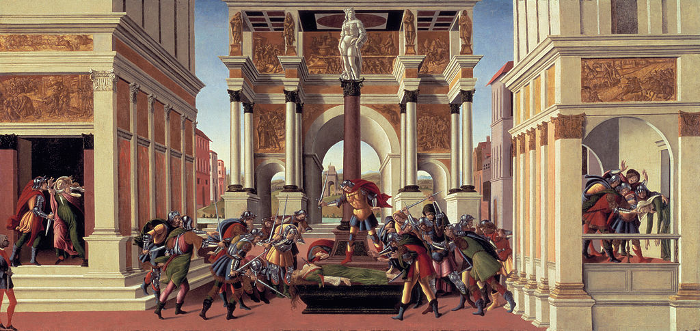

<head>
<meta charset="UTF-8" />
<meta name="keywords" content="drawing, painting" />
<meta name="description" content="drawings by Sunjy" />
<title>Sunjy</title>
<link rel="shortcut icon" type="image/x-icon" href="../../mImages/mCommon/favicon.ico" media="screen" />
<link rel="stylesheet" type="text/css" href="../../mCsses/mCommon/mCssA.css" />
<link rel="stylesheet" type="text/css" href="../../mCsses/mCommon/mCssB.css" />
<link rel="stylesheet" type="text/css" href="../../mCsses/mCommon/mCssC.css" />
<link rel="stylesheet" type="text/css" href="../../mCsses/mCommon/mCssD.css" />
<link rel="stylesheet" type="text/css" href="../../mCsses/mContent/mCssA.css" />
<link rel="stylesheet" type="text/css" href="../../mCsses/mContent/mCssB.css" />
<link rel="stylesheet" type="text/css" href="../../mCsses/mContent/mCssC.css" />
<link rel="stylesheet" type="text/css" href="../../mCsses/mContent/mCssD.css" />
</head>
<script type="text/javascript" src="../../mScripts/mContent/mContentAA.js" /></script>
<script type="text/javascript" src="../../mScripts/mContent/mContentAB.js" /></script>
<script type="text/javascript" src="../../mScripts/mContent/mContentAC.js" /></script>
<script type="text/javascript" src="../../mScripts/mContent/mContentAD.js" /></script>
<script type="text/javascript"></script> 
<script type="text/javascript">
document.write('<div class="mImgAbsolute"></div>');
/*
document.write('<p class="mFontSizeBColor" />From a white paper...</p>');
document.write('<table class="center"><tr><td>');
document.write('');
document.write('</td></tr></table>');
*/
</script>


<script type="text/javascript">
document.write('<p class="mFontSizeBColor" />The Story of Lucretia</p>');
document.write('<p class="mFontSizeSColor" />“The Story of Lucretia” by Sandro Botticelli is a tempera and oil painting on wood, painted between 1496 and 1504 during the Italian Renaissance.<br><br>The painting depicts the legend of a noblewoman, who was raped by the son of the king of Rome. Lucretia believed that the rape dishonored her and her family.<br><br>Thus she committed suicide by stabbing herself with a dagger after revealing what had happened to her.<br><br>The scene on the left porch shows the King’s son threatening Lucretia with sexual violence. The right porch scene shows the discovery of the death of Lucretia.<br><br>The statue at the top of the column is David with Goliath’s head. “David and Goliath” were a symbol of revolt against tyranny in the Republic of Florence.<br><br>According to legend, Brutus grabbed the dagger from Lucretia’s breast after her death and immediately shouted for the overthrow of the King.<br><br>Brutus took an oath to expel the King from Rome and never to allow anyone else to reign again as King. This revolt against tyranny, made Lucius Tarquinius Superbus, the last king of Rome.<br><br>In the center of the painting is Lucretia, with the dagger with which she killed herself protruding from her breast. She is on public display as a heroine, and Brutus stands on the base of the column urging the citizens of Rome to revolt.<br><br>Lucretia had called for vengeance, which Brutus turned into a revolution to end the monarchy. Before the establishment of the Roman Republic, Rome had been ruled by kings. Brutus led the revolt that overthrew the last king.<br><br>Brutus’ Ancestor assassinated another would be King<br><br>Many years later, one of the leading assassins of Julius Caesar was a descendant of Lucius Junius Brutus. The primary charge of the plotters against Julius Caesar was that Julius Caesar was attempting to make himself a king.<br><br>Thus a leading conspirator Cassius, enticed Brutus’ direct descendant, Marcus Junius Brutus, a prominent Roman senator to join the conspiracy by referring to his ancestor’s role in deposing the last king of Rome.<br><br>Roman Republic<br><br>Since the foundation of Rome, its rulers had been Kings, elected for life by the patricians who made up the Roman Senate. The last Roman king was Lucius Tarquinius Superbus (“Tarquin the Proud”).<br><br>Tarquin was expelled in 509 because his son Sextus Tarquinius had raped the noblewoman Lucretia, who afterward took her own life.<br><br>Lucretia’s father, her husband, and their relative Lucius Junius Brutus mustered support from the Senate and army and forced Tarquin into exile.<br><br>The Senate agreed to abolish kingship. Most of the king’s former functions were transferred to two consuls, who were elected to office for a term of one year. Each consul could act as a check on his colleague.<br><br>If a consul abused his powers in office, he could be prosecuted when his term expired. Brutus and Lucretia’s husband became Republican Rome’s first consuls.<br><br>These events are quasi-mythological and fitted a narrative of personal vengeance against a tyrant leading to his overthrow, which was a common theme among Greek cities.<br></p>');
document.write('<table class="center" /><tr><td>');
document.write('<br>The painting depicts the legend of a noblewoman, who was raped by the son of the king of Rome. Lucretia believed that the rape dishonored her and her family.<br><br>Thus she committed suicide by stabbing herself with a dagger after revealing what had happened to her.<br><br>The scene on the left porch shows the King’s son threatening Lucretia with sexual violence. The right porch scene shows the discovery of the death of Lucretia.<br><br>The statue at the top of the column is David with Goliath’s head. “David and Goliath” were a symbol of revolt against tyranny in the Republic of Florence.<br><br>According to legend, Brutus grabbed the dagger from Lucretia’s breast after her death and immediately shouted for the overthrow of the King.<br><br>Brutus took an oath to expel the King from Rome and never to allow anyone else to reign again as King. This revolt against tyranny, made Lucius Tarquinius Superbus, the last king of Rome.<br><br>In the center of the painting is Lucretia, with the dagger with which she killed herself protruding from her breast. She is on public display as a heroine, and Brutus stands on the base of the column urging the citizens of Rome to revolt.<br><br>Lucretia had called for vengeance, which Brutus turned into a revolution to end the monarchy. Before the establishment of the Roman Republic, Rome had been ruled by kings. Brutus led the revolt that overthrew the last king.<br><br>Brutus’ Ancestor assassinated another would be King<br><br>Many years later, one of the leading assassins of Julius Caesar was a descendant of Lucius Junius Brutus. The primary charge of the plotters against Julius Caesar was that Julius Caesar was attempting to make himself a king.<br><br>Thus a leading conspirator Cassius, enticed Brutus’ direct descendant, Marcus Junius Brutus, a prominent Roman senator to join the conspiracy by referring to his ancestor’s role in deposing the last king of Rome.<br><br>Roman Republic<br><br>Since the foundation of Rome, its rulers had been Kings, elected for life by the patricians who made up the Roman Senate. The last Roman king was Lucius Tarquinius Superbus (“Tarquin the Proud”).<br><br>Tarquin was expelled in 509 because his son Sextus Tarquinius had raped the noblewoman Lucretia, who afterward took her own life.<br><br>Lucretia’s father, her husband, and their relative Lucius Junius Brutus mustered support from the Senate and army and forced Tarquin into exile.<br><br>The Senate agreed to abolish kingship. Most of the king’s former functions were transferred to two consuls, who were elected to office for a term of one year. Each consul could act as a check on his colleague.<br><br>If a consul abused his powers in office, he could be prosecuted when his term expired. Brutus and Lucretia’s husband became Republican Rome’s first consuls.<br><br>These events are quasi-mythological and fitted a narrative of personal vengeance against a tyrant leading to his overthrow, which was a common theme among Greek cities.<br>" />');
document.write('</td></tr></table>');
</script>


